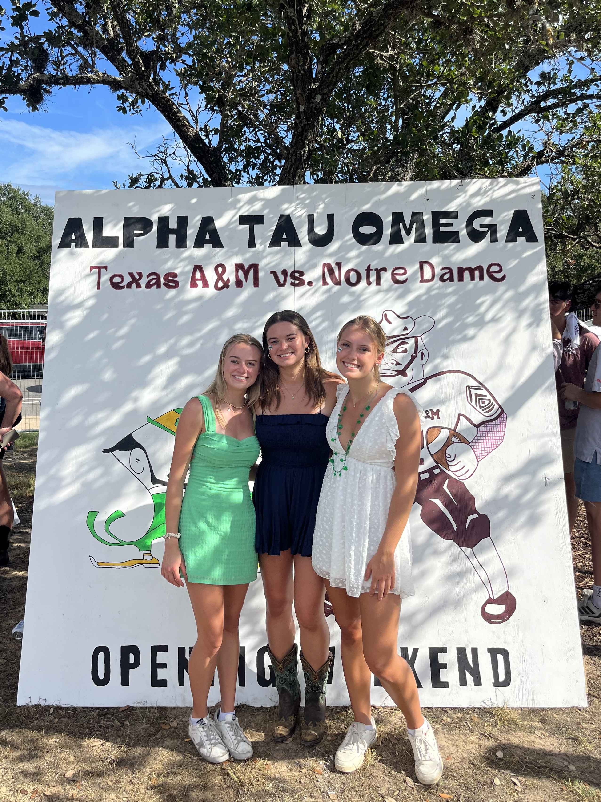

Notre Dame '27 – Computer Science BS | Engineering Corporate Practice Minor
I'm a Computer Science major at the University of Notre Dame with a strong drive for impact, innovation, and exploration.
I love running, sailing, interhall sports, skiing, Swedish cuisine and solving real-world problems through code.